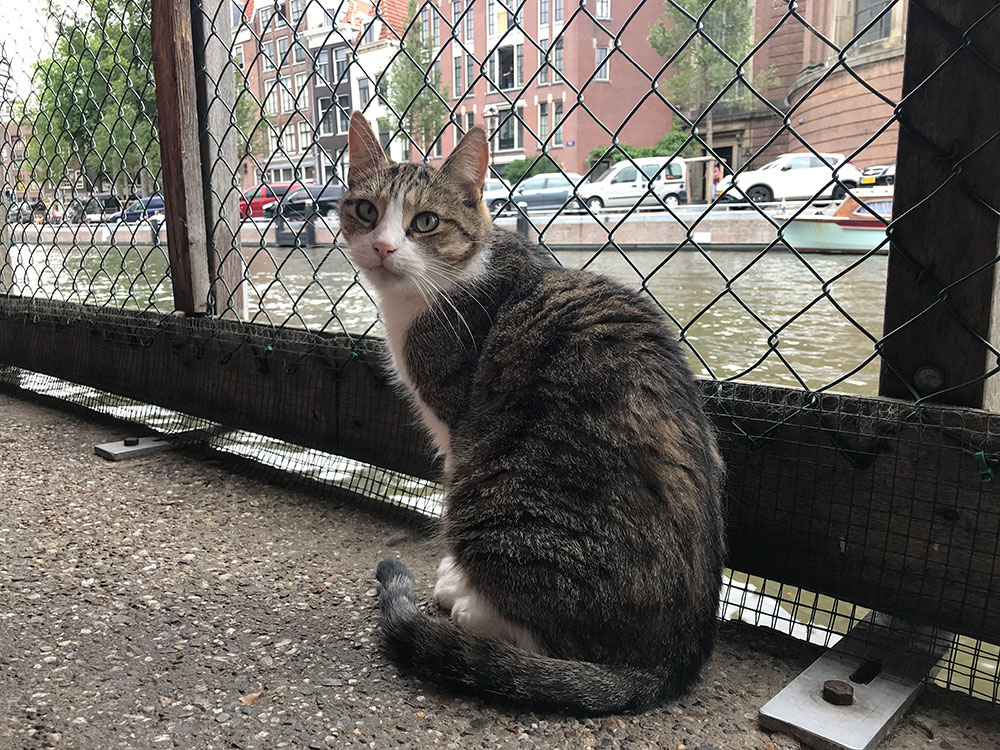
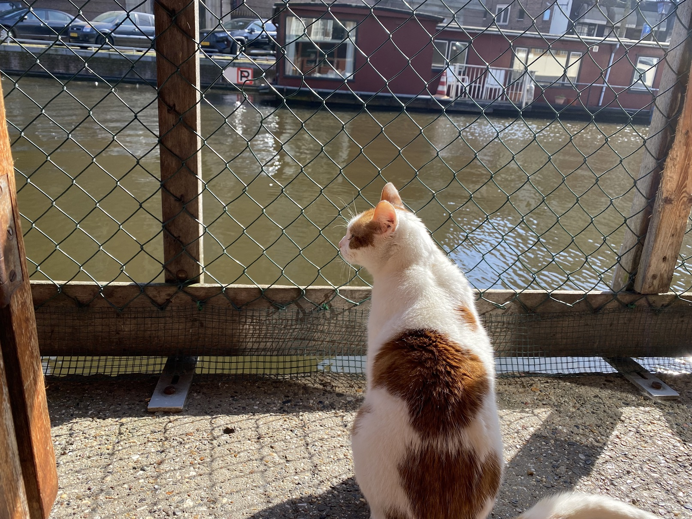

Dit is Peter hij heeft 4 jaar op straat geleefd. En nadat zijn verwondingen weg zijn zoekt deze 5 jarige kat een huisje.
Adopteren
Dit is Jasmijn van 2 jaar als kitten is zij al bij ons binnen gekomen toen was ze ondervoed. Nu zoekt ze een warme familie.
Dit is Max van 10 het is een wat ouder beestje desondanks verdient hij ook liefde. Kan jij hem ermee helpen?
Rosalie is en 7 jarige kat die een aantal straatgevecht flink toegetakeld is. Kan jij haar liefde geven?